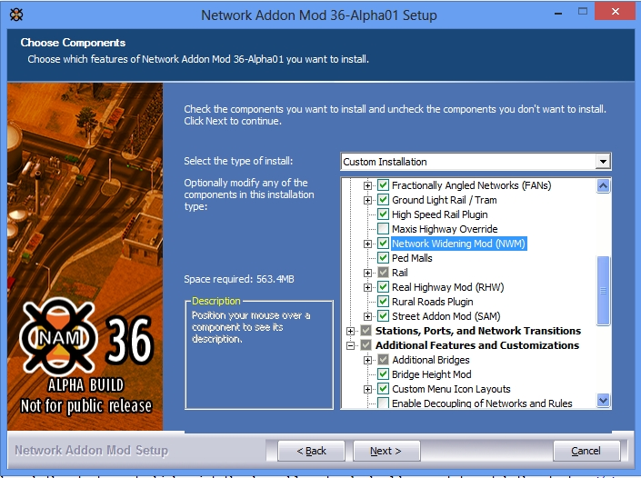
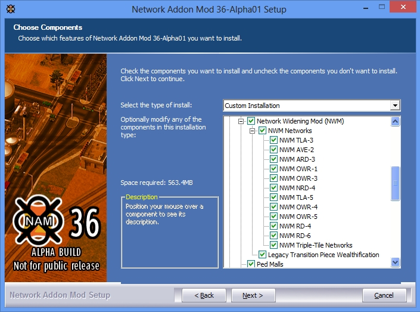
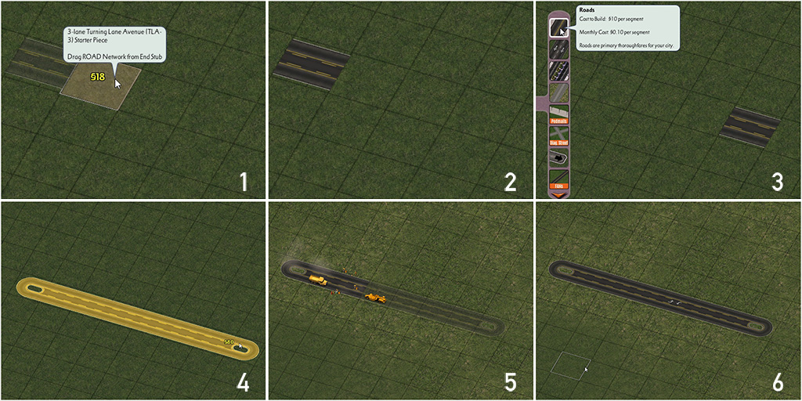
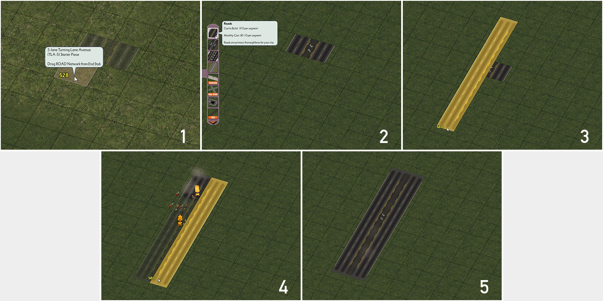
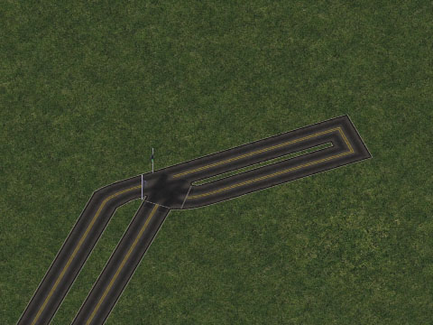
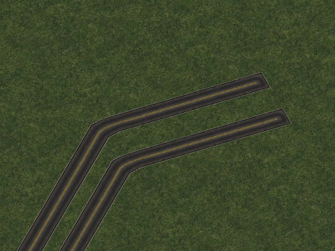
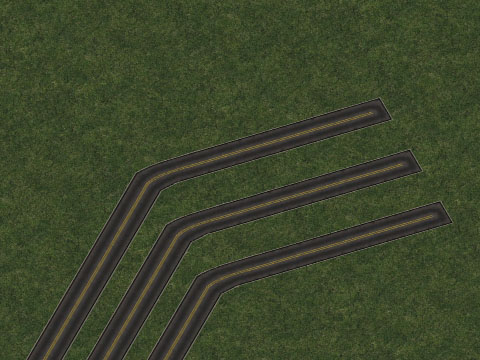
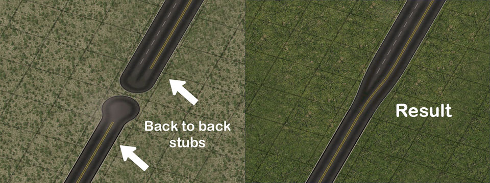
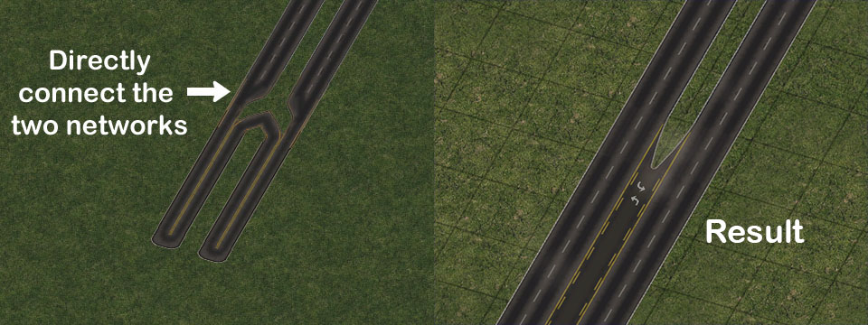
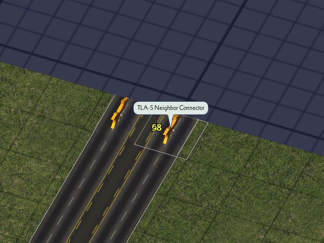

The Network Widening Mod adds 13 new override networks, which extend the game's base Road and One-Way Road networks by providing different width variants, many with higher capacities. This includes 6 single-tile, 5 dual-tile, and 2 triple-tile override networks. Among these networks are the Turning Lane Avenues (TLA), which feature a center turn lane/flush median, multi-lane variants of the Road network, and four additional widths of the One-Way Road (OWR) network. It also includes some degree of diagonal functionality for all networks, transitions to connect NWM networks to Maxis networks or other NAM override networks, a series of Wide-Radius Curve pieces for three of the single-tile networks, and neighbor connector puzzle pieces for selected networks.
- Installing the NWM from the NAM Installer
- NWM Override Networks
- Constructing Diagonals and Base Curves
- Building Intersections
- Transitioning to Other Networks
- Capacities and Speeds
- Network Capabilities
- List of Menu Items
- A Note Regarding Neighbor Connections
- Turn Lanes and NWM Networks
- Known Issues
- Information on Support and Development Updates
The NWM is one of the features included by default if one selects the "Complete Standard Installation" or "Networks and Traffic Simulator" options in the NAM Installer. In Custom Installation, there is a whole section dedicated to the NWM and related optional features.
In Custom Installation, selecting the "Network Widening Mod" box will install the mod.
By clicking the "+" to expand the menu further, one can select which NWM networks they wish to have installed (due to shared components, the triple-tile networks must be installed together). The Legacy Puzzle Wealthification option adds wealth-dependent grass/sidewalk textures to many of the older NWM Transition Puzzle Pieces. Note, however, that this option may not work with all graphics cards, due to Z-fighting settings, and the introduction of draggable transitions (first seen in NAM 30/NWM 2.0), which provide much better support for grass/sidewalks render most (but not all) of the old puzzle pieces obsolete.
Overview
The Network Widening Mod (NWM) plugin includes a total of 13 different override networks, which can be grouped into four classes: Roads (RD), One-Way Roads (OWR), [Road-based] Avenues (AVE), and [Road-based] Turning Lane Avenues (TLA).
All of these override networks can either be constructed by first placing a Starter Piece, then dragging the appropriate default network through the starter, at which point the draggable network should convert to match the starter. This process is shown below on a Road-based NWM Override Network.
(Click for full resolution)
{kind=link}
In the case of multi-tile override networks, they are still based off default single-tile networks, mainly due to limitations with the game's default dual-tile networks, and lack of triple-tile networks. Simply use the same process for each tile in the starter to complete the network.
(Click for full resolution)
{kind=link}
Turning Lane Avenues (TLA) [Road-based]
The Turning Lane Avenues, or TLAs, are Road-based override networks that include a paved/flush center turn lane running down the median, as is especially common in North America. In the case of the multi-tile variants, the existence of this center turn lane allows for vehicles to directly access buildings and lots on the far side of the network--something which the game's default Avenue network does not allow.
There are three total TLA networks presently included in the NWM (note that the center turn lane is included in the lane count associated with each network).
- 3-Lane Turning Lane Avenue (TLA-3) [Single Tile]
- 5-Lane Turning Lane Avenue (TLA-5) [Dual Tile]
- 7-Lane Turning Lane Avenue (TLA-7) [Triple Tile]
Avenues (AVE) [Road-based]
The Avenues, or AVEs, are Road-based (not Avenue-based) override networks that include a landscaped median divider, much like the game's default 4-lane Avenue network. Unlike the TLAs, the AVEs do not allow direct access to buildings and lots on the far side of the network.
- 2-Lane Avenue (AVE-2) [Single Tile]
- 6-Lane Avenue (AVE-6) [Triple Tile]
Roads (RD) [Road-based]
The Roads, or RDs, are Road-based override networks that do not feature a median, similar to the game's default Road network in appearance, but with more lanes. Unlike the TLAs, the RDs do not allow direct access to buildings and lots on the far side of the network.
- 3-Lane Asymmetrical Road (ARD-3) [Single Tile]
- 4-Lane Narrow Road (NRD-4) [Single Tile]
- 4-Lane Road (RD-4) [Dual Tile]
- 6-Lane Road (RD-6) [Dual Tile]
One-Way Roads (OWR) [One-Way Road-based]
The One-Way Roads, or OWRs, are One-Way Road-based override networks that, in contrast to the other networks in the NWM, only allow traffic in a single direction, but feature differing numbers of lanes compared to the game's default 2-lane One-Way Road setup. Similar to the default One-Way Road network, directionality of each NWM OWR network is determined by draw direction, and these width variants can have their direction reversed in the same way. Due to the presence of crossover paths on the multi-tile variants, it is possible for vehicles to reach buildings and lots on the far side of the network.
- 1-Lane One-Way Road (OWR-1) [Single Tile]
- 3-Lane One-Way Road (OWR-3) [Single Tile]
- 4-Lane One-Way Road (OWR-4) [Dual Tile]
- 5-Lane One-Way Road (OWR-5) [Dual Tile]
Constructing Diagonals and Curves
The diagonal functionality for the single-tile NWM networks is straightforward (and diagonal starters are provided for all single-tile networks, except the NRD-4), but dual and triple-tile NWM networks may prove to be less intuitive at first, as there are different construction methods used, depending on the network.
The RD-4 and OWR-4 operate on a "shared-tile" setup. Here is how the base layout (without the overrides) looks for a shared-tile setup:
The TLA-5, OWR-5 and RD-6 operate on a "split tile" setup. here is how the base layout (without the overrides) looks for a split-tile setup:
The TLA-7 and AVE-6 operate on a slightly larger "split tile setup":
There are three methods by which one can create a transition between an NWM network and another network: the Draggable Stub Method, the draggable Direct Connection Method, and the use of Puzzle Pieces. Note that, except in the case of setups not otherwise covered, the Puzzle Piece method is largely considered deprecated/outdated, due to its lack of support for wealth-level textures.
Draggable Stub Method
The Draggable Stub Method is used to transition between an override network and its base network (i.e. from ARD-3 to Road) or between two override networks sharing the same base network (i.e. from RD-4 to RD-6). In order to create transitions that use this method, simply drag each network such that the end stubs of each network are right next to one another, as seen below on the left. Provided the combination of networks is one that is supported, the stubs will convert into a transition between the networks, as seen on the right. This method will also work for networks of different tile widths (i.e. TLA-3 to TLA-5)
Direct Connection Method
The Direct Connection Method is generally used to transition between an override network and a network (default or override) built from a different base (i.e. from TLA-5 to Avenue, or from TLA-3 to RHW-2). In order to create transitions that use this method, simply drag one network into the other, similar to the fashion shown below. Provided the combination of networks is one that is supported, the direct connection will convert into a transition between the networks, as seen on the right.
Puzzle Piece Method
The Puzzle Piece Method entails using the items found under the NWM Transition Puzzle Pieces button. To create a transition, simply find the desired puzzle piece from the menu, aligning the preview to where one wishes to place it, and clicking to plop the piece. Note that some of the puzzle-based transitions do not have NWM Starters on their ends, and the base network setup must be built before plopping the puzzle piece.
Note: With the exception of some setups that are not supported any other way, the Puzzle Piece Method is deprecated/outdated. All future additions to the repertoire of NWM transitions will be in draggable form, using either the Draggable Stub or Direct Connection Methods, as appropriate. Draggable treatments for all of the existing puzzle pieces are planned for a future NAM release.
A full listing of supported draggable transitions can be found in the Network Capabilities section. A listing of the existing transition puzzle pieces can be found in the Menu Items section.
The capacity of each network depends on the Traffic Plugin one has installed. Capacity is generally calculated on a per tile basis by the game. All NWM networks are also surface street-type networks, meaning that they allow full access to RCI Zones. The capacities for the five standard capacity levels of the NAM Traffic Plugin are listed below. Please note that these capacities listed are for the full width of the network, rather than the per-tile capacity.
With the exception of the OWR-1 and RD-4 networks, which share the same capacity as their respective base networks, all other NWM networks have a capacity that is 125% of that of the base network used in the override network setup, as a result of using a special pathing setup that allows a one-time capacity boost of 25%. This is why the NRD-4, despite having an additional lane, has the same capacity as the other boosted single-tile networks, as well as why the OWR-1 has the same capacity as the base One-Way Road. Since crossover paths on multi-tile override networks trigger the boost, the OWR-5 has the same capacity as the OWR-4, though the use of a split tile diagonals on the OWR-5 will give it a higher diagonal capacity than the OWR-4 and its shared tile diagonals.
| NWM Network Type | Tile Width | Classic | Low | Medium | High | Ultra |
|---|---|---|---|---|---|---|
| TLA-3 | 1 | 1500 | 3000 | 5000 | 7500 | 15000 |
| AVE-2 | 1 | 1500 | 3000 | 5000 | 7500 | 15000 |
| ARD-3 | 1 | 1500 | 3000 | 5000 | 7500 | 15000 |
| OWR-1 | 1 | 1800 | 2400 | 4000 | 6000 | 18000 |
| OWR-3 | 1 | 2250 | 4500 | 7500 | 11250 | 22500 |
| NMAVE-4 | 1 | 1500 | 3000 | 5000 | 7500 | 15000 |
| TLA-5 | 2 | 3000 | 6000 | 10000 | 15000 | 30000 |
| OWR-4 | 2 | 4500 | 9000 | 15000 | 22500 | 45000 |
| OWR-5 | 2 | 4500 | 9000 | 15000 | 22500 | 45000 |
| RD-4 | 2 | 2400 | 4800 | 8000 | 12000 | 24000 |
| RD-6 | 2 | 3000 | 6000 | 10000 | 15000 | 30000 |
| TLA-7 | 3 | 4500 | 9000 | 15000 | 22500 | 45000 |
| AVE-6 | 3 | 4500 | 9000 | 15000 | 22500 | 45000 |
With respect to speeds, these networks will have the same catalog speed as their default counterparts.
| Vehicle Type | Road | One-Way Road |
| Car | 50 | 75 |
| Bus | 45 | 65 |
| Freight Truck | 45 | 60 |
| Pedestrian | 15 | 15 |
Note, however, that these catalog speeds are for 100% of catalog capacity, and that speeds on empty networks will exceed these figures by 30%, declining as the networks increase in volume per the Congestion vs. Speed Curve. Since many of the NWM networks have a boosted capacity, they will not reach the 100% figure as quickly, thereby allowing for higher speeds at higher volumes.
Capabilities of Each Network
KEY
| Full Support | This particular feature can be constructed, with minimal (if any) limitations. Note that things like T-intersections may be limited within reason, based on the number of lanes on each network--see the T-End Min and T-End Max chart for further details. |
| Partial Support | This particular feature can be constructed, but not in all instances. Details will be given as to what is/is not possible. Partial support may be for intentional design reasons (such as realism or general unfeasibility), or simply because the feature has not been fully developed. |
| Limited Support | This particular feature can be constructed, but only in extremely limited circumstances. Instances that are possible may be listed, insofar as it is possible. Use at your own risk. |
| No Support | This particular feature cannot be constructed. This restriction could be for intentional design reasons (such as realism, or general unfeasibility), or simply because it has not yet been developed. |
ADDITIONAL NOTES
T-End Min: If the given network is to end at a T-intersection, this value is the minimum number of total lanes that needs to be on the cross network. For instance, while an RD-6 (T-End Min = 3) can end at an ARD-3 (3 total thru lanes), it cannot end at a Road (2 total thru lanes). Center lanes on TLA networks do not count toward the overall figure (i.e. the TLA-5 would be considered to have 4 lanes total in this instance).
T-In Max: If a cross network ends at the given network in a T-intersection, this value is the maximum number of lanes on the cross network heading inbound to the T-intersection (half the network, in the case of a two-way network, the full network if one-way). For instance, an AVE-2 can have an Avenue or RD-4 end at it (AVE-2 T-In Max = 2, while the Avenue and RD-4 have 4 lanes total, 2 heading inbound to the intersection), but an OWR-1 cannot (T-In Max = 1). Center lanes on TLA networks do not count toward the overall figure (i.e. the TLA-5 would be considered to have 4 lanes total in this instance).
OxO: OxO stands for "orthogonal x orthogonal", and refers to a situation where both networks are orthogonal (in a straight line) along the game's grid, intersecting perpendicularly (at 90° angles at all corners)
OxD: OxD stands for "orthogonal x diagonal", and refers to a situation where the given network is orthogonal (in a straight line) along the game's grid, and the cross network is diagonal (running at a 45° angle).
DxO: DxO stands for "diagonal x orthogonal", and refers to a situation where the base network is diagonal (running at a 45° angle), and the cross network is orthogonal (in a straight line) along the game's grid.
DxD: DxD stands for "diagonal x diagonal", and refers to a situation where both networks are diagonal (running at a 45° angle) along the game's grid, intersecting perpendicularly (at 90° angles at all corners)
Stub: Indication that the transition can be built using the Draggable Stub Method.
Dir: Indication that the transition can be built using the Direct Connection Method.
PP: Indication that the feature can only be built through the use of a static Puzzle Piece.
Base Draggable Network Features
| Network | Base Orthogonals | Base Diagonals | Ortho 90° Bend | Ortho S-Curve | Diag 90° "Boomerang" Bend | Diag S-Curve |
|---|---|---|---|---|---|---|
| TLA-3 | Yes | Yes (Single Tile) | Yes | Yes | Yes | Yes |
| AVE-2 | Yes | Yes (Single Tile) | Yes | Yes | Yes | Yes |
| ARD-3 | Yes | Yes (Single Tile) | Yes | Yes | Yes | Yes |
| NRD-4 | Yes | Yes (Single Tile) | Yes | Yes | Yes | Yes |
| OWR-1 | Yes | Yes (Single Tile) | Yes | Yes | Yes | Yes |
| OWR-3 | Yes | Yes (Single Tile) | Yes | Yes | Yes | Yes |
| TLA-5 | Yes | Yes (Split Tile) | Yes | Yes | No | No |
| RD-4 | Yes | Yes (Shared Tile) | Yes | Yes | No | No |
| RD-6 | Yes | Yes (Split Tile) | No | Yes | No | No |
| OWR-4 | Yes | Yes (Shared Tile) | No | Yes | No | No |
| OWR-5 | Yes | Yes (Split Tile) | No | Yes | No | No |
| TLA-7 | Yes | Yes (Split Tile) | No | No | No | No |
| AVE-6 | Yes | Yes (Split Tile) | No | No | No | No |
Intersections/Crossings
| Network | T-End Min | T-In Max | OxO Maxis Networks | OxO NWM | OxO GLR/Tram | OxO STR | OxO Draggable Viaducts | OxO L0 RHW | OxO L1-L4/DD RHW | OxO HSR | OxO Dual-Networking | OxO SAM | FLUPs | URail |
|---|---|---|---|---|---|---|---|---|---|---|---|---|---|---|
| TLA-3 | 1 | 2 | Yes | Yes | Urban/Rural Only | Yes | Yes | RHW-2 and MIS Only | Yes | Yes | No | No | No | No |
| AVE-2 | 1 | 2 | Yes | Yes | Urban/Rural Only | Yes | Yes | RHW-2 and MIS Only | Yes | Yes | No | No | No | No |
| ARD-3 | 2 | 3 | Yes | Yes | Urban/Rural Only | Yes | Yes | RHW-2 and MIS Only | Yes | Yes | No | No | No | No |
| NRD-4 | 2 | 4 | Yes | Yes | Urban/Rural Only | Yes | Yes | RHW-2 and MIS Only | Yes | Yes | No | No | No | No |
| OWR-1 | 1 | 1 | Yes | Yes | Urban/Rural Only | Yes | Yes | RHW-2 and MIS Only | Yes | Yes | No | No | No | No |
| OWR-3 | 3 | 3 | Yes | Yes | Urban/Rural Only | Yes | Yes | RHW-2 and MIS Only | Yes | Yes | No | No | No | No |
| TLA-5 | 2 | 4 | Yes | Yes | Urban/Rural Only | Yes | Yes | RHW-2 and MIS Only | Yes | Yes | No | No | No | No |
| RD-4 | 2 | 4 | Yes | Yes | Urban/Rural Only | Yes | Yes | RHW-2 and MIS Only | Yes | Yes | No | No | No | No |
| RD-6 | 3 | 6 | Yes | Yes | Urban/Rural Only | Yes | Yes | RHW-2 and MIS Only | Yes | Yes | No | No | No | No |
| OWR-4 | 4 | 4 | Yes | Yes | Urban/Rural Only | Yes | Yes | RHW-2 and MIS Only | Yes | Yes | No | No | No | No |
| OWR-5 | 5 | 5 | Yes | Yes | Urban/Rural Only | Yes | Yes | RHW-2 and MIS Only | Yes | Yes | No | No | No | No |
| TLA-7 | 3 | 6 | Yes | Yes | Urban/Rural Only | Yes | Yes | RHW-2 and MIS Only | Yes | Yes | No | No | No | No |
| AVE-6 | 3 | 6 | Yes | Yes | Urban/Rural Only | Yes | Yes | RHW-2 and MIS Only | Yes | Yes | No | No | No | No |
| Network | OxD/DxO/DxD Maxis Networks | OxD/DxO/DxD NWM | OxD/DxO/DxD RHW | All Other OxD/DxO/DxD |
|---|---|---|---|---|
| TLA-3 | Limited, as-is, +-intersections only (no T-ints) | Limited, as-is, only with single-tile NWM networks, +-intersections only (no T-ints) | No (Not yet implemented) | No (Not yet implemented) |
| AVE-2 | Limited, as-is, +-intersections only (no T-ints) | Limited, as-is, only with single-tile NWM networks, +-intersections only (no T-ints) | No (Not yet implemented) | No (Not yet implemented) |
| ARD-3 | Limited, as-is, +-intersections only (no T-ints) | No (not yet implemented) | No (Not yet implemented) | No (Not yet implemented) |
| NRD-4 | No (not yet implemented) | No (not yet implemented) | No (Not yet implemented) | No (Not yet implemented) |
| OWR-1 | No (not yet implemented) | No (not yet implemented) | No (Not yet implemented) | No (Not yet implemented) |
| OWR-3 | Limited, as-is, +-intersections only no T-ints) | No (not yet implemented) | No (Not yet implemented) | No (Not yet implemented) |
| All Multi-Tile Networks | No (not yet implemented) | No (not yet implemented) | No (Not yet implemented) | No (Not yet implemented) |
| Networks | Asymmetrical Intersections |
|---|---|
| All Networks | No Support |
Orthogonal Transitions
| Street | Road | One-Way Road | Avenue | Maxis Hwy | RHW | TLA-3 | AVE-2 | ARD-3 | NRD-4 | OWR-1 | OWR-3 | TLA-5 | RD-4 | RD-6 | OWR-4 | OWR-5 | TLA-7 | AVE-6 | |
|---|---|---|---|---|---|---|---|---|---|---|---|---|---|---|---|---|---|---|---|
| TLA-3 | No | Yes (Stub) | No | Yes (Dir) | No | RHW-2 (Dir) | Self | Yes (Stub) | Yes (Stub) | No | No | No | Yes (Stub) | No | No | No | No | No | No |
| AVE-2 | No | Yes (Stub) | No | Yes (Dir) | No | RHW-2 (Dir) | Yes (Stub) | Self | Yes (Stub) | No | No | No | Yes (Stub) | No | No | No | No | No | No |
| ARD-3 | No | Yes (Stub) | No | Yes (Dir) | No | RHW-3 (Dir) | Yes (Stub) | Yes (Stub) | Self | Yes (Stub) | No | No | No | No | No | No | No | No | No |
| NRD-4 | No | Yes (Stub) | No | Yes (Dir) | No | No | No | No | Yes (Stub) | Self | No | No | Yes (Stub) | Yes (Stub) | No | No | No | No | No |
| OWR-1 | No | No | Yes (Stub) | No | No | MIS (Dir) | No | No | No | No | Self | No | No | No | No | No | No | No | No |
| OWR-3 | No | No | Yes (Stub) | No | No | RHW-6S (Dir) | No | No | No | No | No | Self | No | No | Yes-Dual (Dir) | Yes (Stub) | Yes (PP) | Yes-Dual (Dir) | Yes-Dual (Dir) |
| TLA-5 | No | No | Yes (Dir) | Yes (Dir) | No | RHW-4 (Dir) | Yes (Stub) | Yes (Stub) | No | Yes (Stub) | No | No | Self | Yes (Stub) | Yes (Stub) | No | No | No | No |
| RD-4 | No | Yes (Stub) | Yes (Dir) | Yes (Dir) | No | RHW-4 (Dir) | No | No | No | Yes (Stub) | No | No | Yes (Stub) | Self | Yes (Stub) | No | No | No | No |
| RD-6 | No | No | No | Yes (Dir) | No | RHW-6S (Dir) | No | No | No | No | No | Yes-Dual (Dir) | Yes (Stub) | Yes (Stub) | Self | No | No | Yes (PP) | Yes (PP) |
| OWR-4 | No | No | Yes-Dual (Stub) | No | No | RHW-8S (Dir) | No | No | No | No | No | Yes (Stub) | No | No | No | Self | Yes (Stub) | No | No |
| OWR-5 | No | No | No | No | No | RHW-10S (Dir) | No | No | No | No | No | Yes (PP) | No | No | No | Yes (Stub) | Self | No | No |
| TLA-7 | No | No | No | No | No | RHW-6C (Dir) | No | No | No | No | No | Yes-Dual (Dir) | No | No | Yes (PP) | No | No | Self | Yes (Stub) |
| AVE-6 | No | No | No | Yes (PP) | No | RHW-6C (Dir) | No | No | No | No | No | Yes-Dual (Dir) | No | No | Yes (PP) | No | No | Yes (Stub) | Self |
Diagonal Transitions
| Road | One-Way Road | TLA-3 | AVE-2 | ARD-3 | All Other Networks | |
|---|---|---|---|---|---|---|
| TLA-3 | Yes (Stub) | No | Self | Yes (PP) | Yes (PP) | No |
| AVE-2 | Yes (Stub) | No | Yes (PP) | Self | Yes (PP) | No |
| ARD-3 | Yes (Stub) | No | Yes (PP) | Yes (PP) | Self | No |
| OWR-1 | No | Yes (Stub) | No | No | No | No |
| OWR-3 | No | Yes (Stub) | No | No | No | No |
| All Other Networks | No | No | No | No | No | No |
Wide-Radius/Multi-Radius Curves
| Network | S-Curve Puzzle | 45° Curve Puzzle | 90° Curve Puzzle (Large) | 90° Curve Puzzle (Small) | Multi-Radius Curves |
|---|---|---|---|---|---|
| TLA-3 | Yes | Yes | Yes | Yes | Not yet implemented |
| AVE-2 | Yes | Yes | Yes | Yes | Not yet implemented |
| ARD-3 | Yes | Yes | Yes | Yes | Not yet implemented |
| All Other Networks | No, not planned | No, not planned | No, not planned | No, not planned | Not yet implemented |
Fractional Angle Networking
| Networks | All Setups |
|---|---|
| All Networks | No Support (not yet implemented). |
Roundabout Support
| Networks |
|---|
Bridges
| Networks | Bridges |
|---|---|
| RD-4 | Yes, Iron Girder Bridge (Avenue-based) |
| RD-6 | Yes, Iron Girder Bridge (Avenue-based) |
| All Single-Tile Networks | No Support (not yet implemented). |
| All Other Dual-Tile Networks | No Support (not yet implemented). |
| All Triple-Tile Networks | No Support (not possible without water-draining workaround, due to terrain engine limitations on bridge adjacency). |
Elevated NWM Viaducts
| Networks | All Setups |
|---|---|
| All Networks | No Support (not yet implemented). |
Tunnels
| Networks | All Setups |
|---|---|
| All Networks | No Support (not possible) |
NWM Starters
- TLA-3 Orthogonal Starter / Diagonal Starter
- AVE-2 Orthogonal Starter / Diagonal Starter
- ARD-3 Orthogonal Starter / Diagonal Starter
- NRD-4 Orthogonal Starter
- OWR-1 Orthogonal Starter / Diagonal Starter
- OWR-3 Orthogonal Starter / Diagonal Starter
- TLA-5 Orthogonal Starter
- RD-4 Orthogonal Starter
- RD-6 Orthogonal Starter
- OWR-4 Orthogonal Starter
- OWR-5 Orthogonal Starter
- TLA-7 Orthogonal Starter
- AVE-6 Orthogonal Starter

NWM Wide-Radius Curve Pieces
- TLA-3 S-Curve
- TLA-3 45-Degree Curve
- TLA-3 90-Degree Curve (Large)
- TLA-3 90-Degree Curve (Small)
- AVE-2 S-Curve
- AVE-2 45-Degree Curve
- AVE-2 90-Degree Curve (Large)
- AVE-2 90-Degree Curve (Small)
- ARD-3 S-Curve
- ARD-3 45-Degree Curve
- ARD-3 90-Degree Curve (Large)
- ARD-3 90-Degree Curve (Small)

NWM Transition Puzzle Pieces
- Road-to-TLA-3 Transition
- Road-to-AVE-2 Transition
- Road-to-ARD-3 Transition
- Road-to-NMAVE-4 Transition
- OWR-1-to-2 Transition
- OWR-2-to-3 Transition
- TLA-3-to-AVE-2 Transition
- TLA-3-to-ARD-3 Transition
- AVE-2-to-ARD-3 Transition
- Road-to-TLA-3 Transition Diagonal
- Road-to-AVE-2 Transition Diagonal
- Road-to-ARD-3 Transition Diagonal
- OWR-1-to-2 Diagonal Transition
- OWR-2-to-3 Diagonal Transition
- Road-to-AVE-2 Transition Type B*
- AVE-4-to-AVE-2 Transition
- TLA-3-to-ARD-3 Transition Diagonal*
- TLA-3-to-AVE-2 Transition Diagonal*
- AVE-2-to-ARD-3 Transition Diagonal*
- MAVE-4 to AVE-4 Transition Type A
- MAVE-4 to AVE-4 Transition Type B*
- MAVE-4 to TLA-5 Transition
- MAVE-4 to MAVE-6 Transition
- MAVE-6 to AVE-4 Transition Type A
- MAVE-6 to AVE-4 Transition Type B*
- MAVE-6 to TLA-5 Transition
- TLA-5 to AVE-4 Transition
- OWR-3 to OWR-4 Transition
- OWR-3 to OWR-5 Transition*
- OWR-4 to OWR-5 Transition
- AVE-4 to AVE-6 Transition*
- TLA-7 to AVE-6 Transition

NWM Neighbor Connector Pieces
- TLA-5 Neighbor Connector
- MAVE-4 Neighbor Connector
- MAVE-6 Neighbor Connector
- TLA-7 Neighbor Connector
- AVE-6 Neighbor Connector

NWM Triple-Tile Network Turn Lane Extension Pieces (TuLEPs) [OUTDATED]
- TLA-7/AVE-6 Type 130 Transition
- TLA-7/AVE-6 Type 130 TuLEP
- TLA-7/AVE-6 Type 130 Blank TuLEP
- TLA-7/AVE-6 Type 130 x Avenue Type 120 (a) +-Intersection (b) T-Intersection
- TLA-7/AVE-6 Type 130 x Road Type 110 (a) +-Intersection (b) T-Intersection
- TLA-7/AVE-6 Type 130 x TLA-7/AVE-6 Type 130 (a) +-Intersection (b) T-Intersection

NWM Bridges (found under the Avenue Bridges dialog)
- RD-4 Iron Girder Bridge
- RD-6 Iron Girder Bridge

Neighbor connections are possible for all Road-based NWM networks, though the three Road-based multi-tile networks (TLA-5, RD-4, and RD-6) require either (a) conversion to Avenue before the edge of the city tile, or (b) the use of special Neighbor Connector pieces in order to provide proper functionality. Note that the Avenue conversion method is, at present, more reliable than the Neighbor Connector pieces, which still have some unexplained issues requiring further investigation (see the Known Issues section).
The TLA-7 and AVE-6 also have Neighbor Connector pieces, but can natively create the connections, albeit with the caveat of crowding on the central tile of each network at the border, which also exists to an extent with the piece-based approach.
In order to use the Neighbor Connector pieces, simply build the neighbor connection as normal by dragging the override to the edge of the city tile with the Road tool, then place the appropriate Neighbor Connector for the network over top of the neighbor connection arrows. Note that the game's default Neighbor Connection arrows will not change direction, nor do they need to in order for the connection to function with the connector pieces.
With the single-tile Road-based networks, neighbor connections may be built normally by simply dragging the network to the edge of the tile, without any alteration. One-Way Road-based networks cannot create neighbor connections, much like their base network. This can be worked around to an extent, however--see the Known Issues section.
The best way to add turn lanes to NWM networks is through the FLEX Turn Lanes (FTLs). The FTL system includes modular draggable/FLEX components, including some pre-fabricated setups, which can be plopped in a single click. The following NWM networks are currently capable of interfacing with the FTL system:
- TLA-3: Type 110
- AVE-2: Type 110
- ARD-3: Type 110
- TLA-5: Type 120 and Type 220
- TLA-7: Type 130
- AVE-6: Type 130
All NWM networks also support at least some capabilities with the FTL Slip Lanes as well (ARD-3 support, however, is limited, due to its complexity). NWM-related features with the FTL system are planned to be expanded greatly with future updates.
The NWM may also interface with the older Turn Lane Extension Pieces (TuLEPs), which have since become deprecated/outdated with the introduction of the FLEX Turn Lanes. The NWM installs a set of Type 130 TuLEPs, designed for use with the NWM's triple-tile networks, the TLA-7 and AVE-6. The contents of this are listed above in the menu section.
Support for the older Avenue and Road Turning Lanes does not exist with the NWM. The NWM is actually part of the reason the Road Turning Lanes plugin was switched away from its old "automatic" construction method, to the new "semi-automatic" approach.
For more details, see the Turn Lanes Feature Guide.
Below is a list of known issues with the Network Widening Mod plugin, that, at present, have not or cannot be addressed:
- Crossover paths on the TLA networks, as well as the OWR-4 and OWR-5, may cause automata (vehicles) to behave strangely, including weaving or circular/wrong-way driving. This is especially pronounced with Generated Automata (i.e. moving trucks, police cars, and other non-commute-related vehicles that spawn from nearby lots), as opposed to Commute Automata. This is a limitation of the game's automata engine, and there is no known solution that does not break the otherwise very useful functionality of the networks, which the NAM Team prioritizes over simply visual effects, like automata behavior.
- The NWM Neighbor Connector Pieces, despite being set up identical to the perfectly functional RealHighway (RHW) Neighbor Connector Pieces, have had a tendency to not accept as much traffic as they should. For dual-tile networks, simply switch to Avenue for the connection. With triple-tile networks, the center tile will allow for a functional connection, though congestion is to be expected. Further investigation on this issue is planned.
- Complex setups in which certain combinations of otherwise supported intersections/crossings and/or sharp curves are placed directly adjacent to one another, with no gap, may cause NWM network overrides to destabilize. This is due to a lack of override code to cover the adjacency situation, and is not necessarily a bug. If you feel the particular adjacency situation is useful enough that it should be covered, please stop by our support threads (see "Information on Support and Development Updates" below) with a screenshot of the particular setup, so we can make a determination and/or help you find an alternate solution that is presently supported.
- The NWM's One-Way Road variants cannot form Neighbor Connections, mainly as the base One-Way Road network cannot form them, either. There is a workaround if one installed the NAM's RealHighway (RHW) plugin, by transitioning their NWM OWRs to RHWs just before the edge of the city tile, and using the RHW's Neighbor Connector pieces.
- The NWM OWR networks do not have any traffic signals facing their approaches at intersections, due to the fact that the stop points that are necessary for signal functionality do not work by default on the base One-Way Road network. This will be addressed in the future with an extension to the NAM's Signalized Intersection and Turn Arrow Project(SITAP).
For technical support and information on new features coming to the Network Widening Mod in future releases, please check out the official Network Widening Mod (NWM) - Development and Support threads on the forums at SimCity 4 Devotion and Simtropolis.